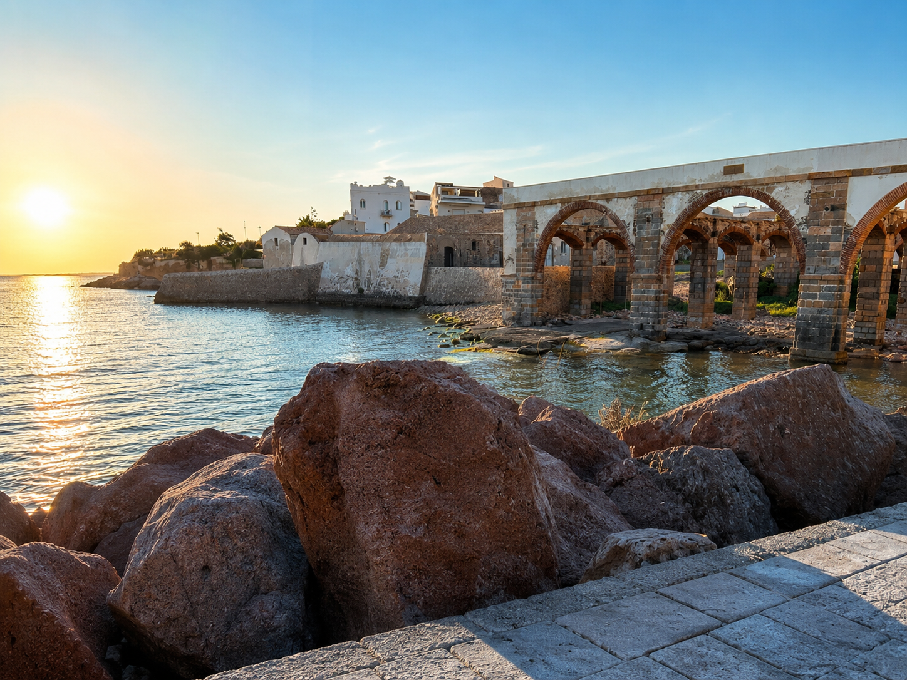

EVENTO IN CORSO • 19–21 GIUGNO 2026 🌊🔥

Portoscuso si prepara ad accogliere il Red Tuna Fest 2026, uno degli eventi più attesi dell'estate nel Sud Sardegna.
Per tre giorni il paese celebra la sua antica tradizione marinara con degustazioni, spettacoli, musica dal vivo e iniziative dedicate al tonno rosso, simbolo della storia e dell'identità del territorio.
Tra il lungomare, il porto e la storica tonnara, visitatori e appassionati potranno vivere un'esperienza autentica fatta di sapori, cultura e atmosfera mediterranea.
Il protagonista assoluto del festival è il tonno rosso, raccontato attraverso la gastronomia, la storia della tonnara e le tradizioni che da secoli caratterizzano la vita di Portoscuso.
Durante il Red Tuna Fest il lungomare si anima con spettacoli, intrattenimento e momenti dedicati alla valorizzazione del territorio.
Il profumo del mare, i tramonti sul porto e l'atmosfera festosa rendono l'evento una delle esperienze più suggestive dell'estate nel Sulcis.
Il Red Tuna Fest è anche l'occasione ideale per visitare le bellezze di Portoscuso.
Tra mare cristallino, tradizioni e panorami mozzafiato, il festival diventa il punto di partenza perfetto per scoprire il Sud Sardegna più autentico.
Sa Domu de Efisia ti aspetta nel cuore di Portoscuso, a pochi minuti dagli eventi del festival e dal lungomare.
Dopo una giornata tra eventi, degustazioni e mare, potrai rilassarti nel comfort di Sa Domu de Efisia e vivere Portoscuso senza stress.
🐟 Red Tuna Fest 2026
📅 19 – 21 giugno 2026
⚠️ Prenota il tuo soggiorno durante il festival.
Tradizione, mare e sapori autentici ti aspettano a Portoscuso.
LA FESTA PIÙ SENTITA DEL SUD SARDEGNA 🌊⛪🎆
Foto: Wikimedia Commons - CC BY 3.0
Dal 15 al 26 maggio 2026 Portoscuso si riempirà di luci, tradizioni, musica e devozione per celebrare la Festa Patronale di Santa Maria d’Itria, uno degli eventi più importanti e sentiti del Sulcis.
Per giorni il paese vivrà un’atmosfera unica tra celebrazioni religiose, concerti, eventi sul lungomare, spettacoli sul mare e migliaia di persone attese nel cuore della Sardegna sud-occidentale.
Non è soltanto una festa.
È una tradizione che unisce il mare, la fede e l’anima autentica di Portoscuso.
Uno dei momenti più emozionanti della festa è la storica processione sul mare dedicata a Santa Maria d’Itria.
La statua della Madonna attraversa il porto accompagnata dalle barche dei pescatori decorate a festa, tra sirene, applausi, canti e il riflesso del tramonto sull’acqua.
Un evento suggestivo che ogni anno richiama visitatori da tutta la Sardegna.
Il mare di Portoscuso diventa il cuore della celebrazione.
Un momento intenso, autentico e profondamente legato alla tradizione marinara del paese.
Durante la festa il centro di Portoscuso si anima ogni sera con eventi e spettacoli.
Tra le vie del paese e sul porto troverai:
Le notti di maggio diventano magiche tra luci, profumo di mare e atmosfera autentica.
Il 26 maggio la festa si concluderà con uno degli appuntamenti più attesi: il grande spettacolo pirotecnico sul mare.
I fuochi illumineranno il porto e il cielo di Portoscuso creando uno scenario spettacolare visibile dal lungomare e dalle spiagge del paese.
L’evento viene trasmesso anche in diretta da Videolina.
La Festa di Santa Maria d’Itria è anche l’occasione perfetta per scoprire Portoscuso e il mare del Sulcis.
Durante il soggiorno potrai visitare:
Tra mare cristallino, tramonti e tradizioni antiche, Portoscuso regala un’esperienza autentica lontana dal turismo di massa.
Sa Domu de Efisia ti aspetta nel cuore del paese, a pochi passi dal lungomare e dai principali eventi della festa.
Dopo le serate sul porto e gli eventi della festa potrai rilassarti in un’atmosfera autentica e familiare nel cuore di Portoscuso.
✨ Festa Patronale di Santa Maria d’Itria 2026
⚠️ Ultime camere disponibili durante i giorni della festa.
La Sardegna più autentica ti aspetta.
LA SARDEGNA STA PER ESPLODERE 🌊🐟🎶
Dal 23 maggio al 2 giugno 2026 Carloforte diventerà il centro dell’estate italiana.
Dieci giorni di concerti sul mare, tonnara storica, street food, tramonti spettacolari, musica live e migliaia di persone attese nel cuore del Sud Sardegna.
Il Girotonno non è una semplice festa. È uno degli eventi più famosi della Sardegna. Un’esperienza che unisce mare, tradizione, cultura tabarchina e spettacolo in uno dei borghi più belli del Mediterraneo.
Vicoli illuminati sul porto.
Profumo di tonno rosso appena cucinato.
Musica che risuona sul mare.
Barche, tramonti infuocati e il vento della Sardegna che accompagna ogni notte.
Qui la tonnara è ancora attiva. Una tradizione antica che vive ancora oggi e rende Carloforte uno dei luoghi più autentici d’Italia.
Quest’anno il Tuna Stage ospiterà due grandi eventi gratuiti destinati a richiamare migliaia di persone da tutta Italia.
📅 Sabato 30 maggio 2026
🕥 Ore 22:30
📍 Tuna Stage – Carloforte
🎟️ CONCERTO GRATUITO
Rocco Hunt farà esplodere Carloforte con uno dei live più attesi dell’estate 2026. Rap, energia e una notte destinata a diventare memorabile sul mare della Sardegna.
📅 Lunedì 1 giugno 2026
🕥 Ore 22:30
📍 Tuna Stage – Carloforte
🎟️ CONCERTO GRATUITO
Ermal Meta porterà sul palco emozioni, musica e atmosfera magica in una delle serate più attese del Girotonno.
Il modo migliore per vivere il Girotonno è partire da Portoscuso.
Dal porto partono continuamente i traghetti per Carloforte con traversate di circa 30 minuti tra panorami spettacolari e mare cristallino.
Per questo sempre più persone scelgono di dormire a Portoscuso: meno caos, più relax e collegamenti comodissimi con il festival.
Sa Domu de Efisia è la soluzione ideale per vivere il Girotonno senza stress.
Dopo concerti, eventi e serate sul porto potrai rilassarti in camere e appartamenti accoglienti immersi nell’atmosfera autentica di Portoscuso.
📅 Girotonno 2026 | 23 maggio – 2 giugno
🎶 Concerti gratuiti, mare, tonnara e tradizione
⚠️ Carloforte durante il Girotonno registra ogni anno il tutto esaurito.
La Sardegna più autentica ti aspetta.